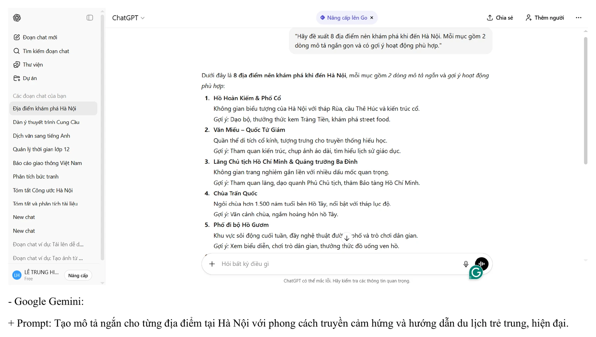
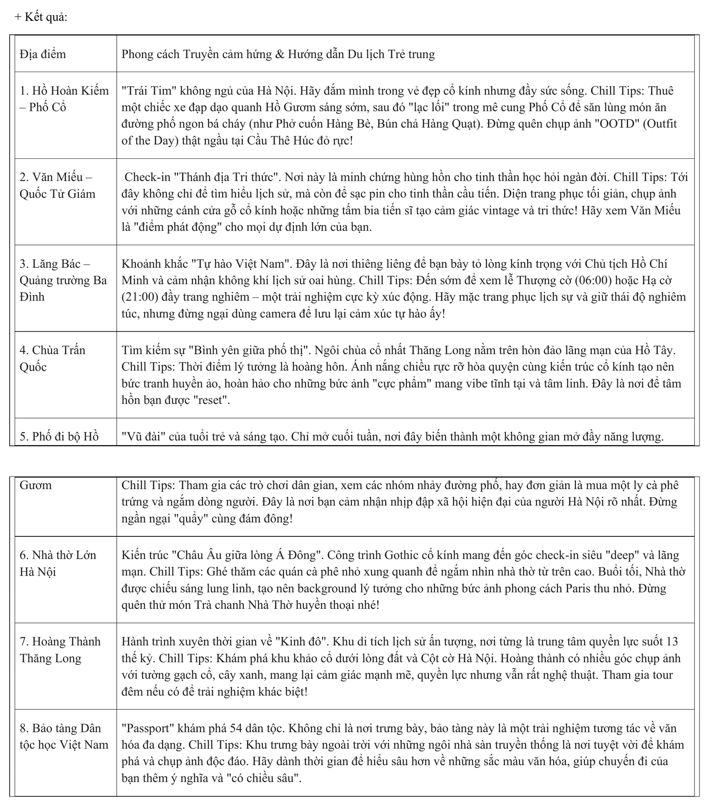
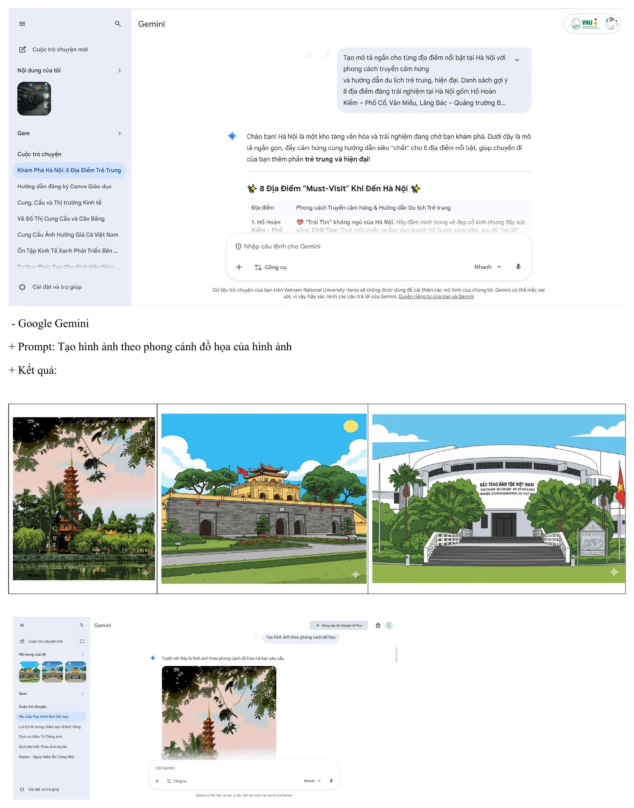
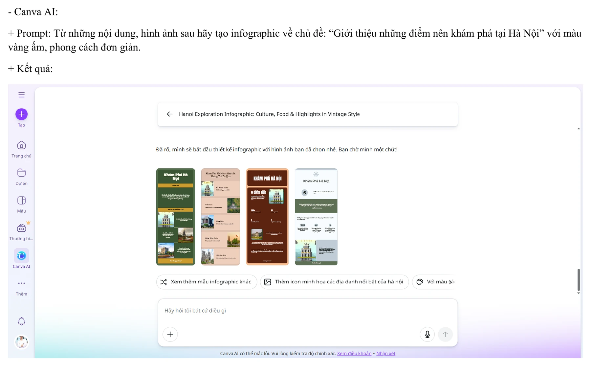
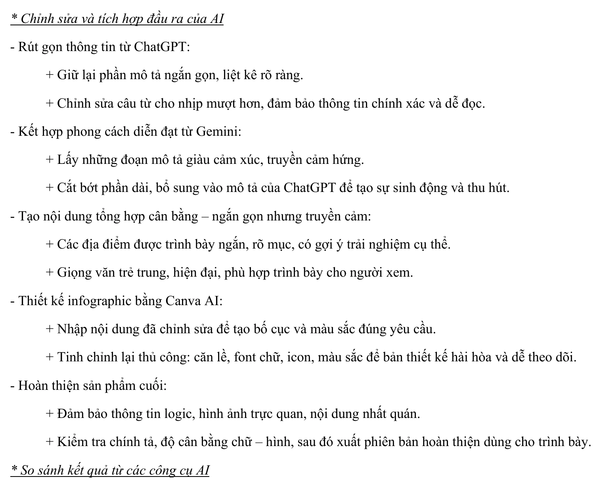
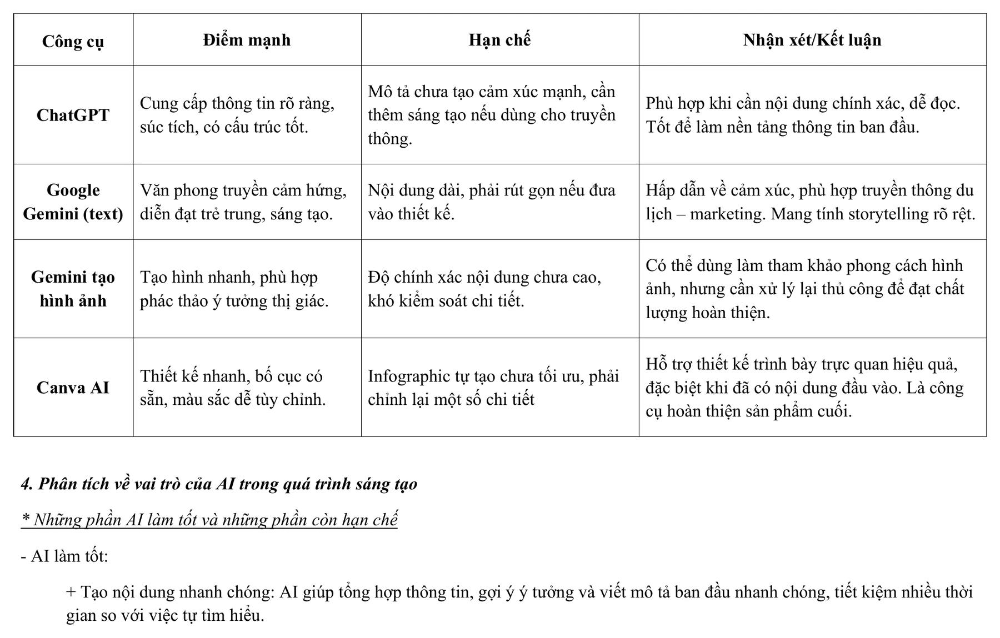
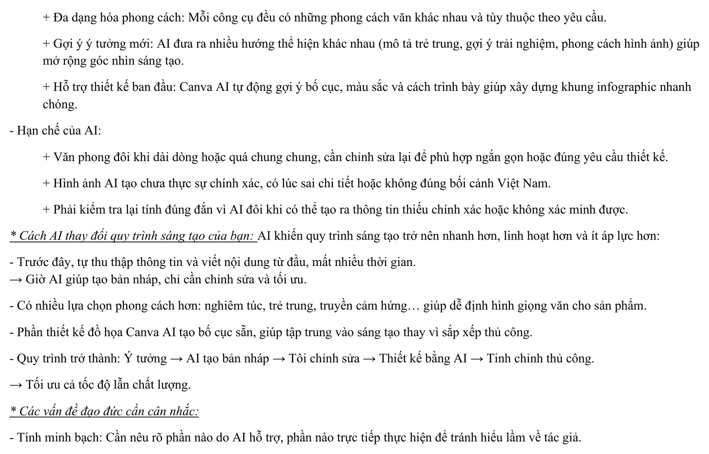
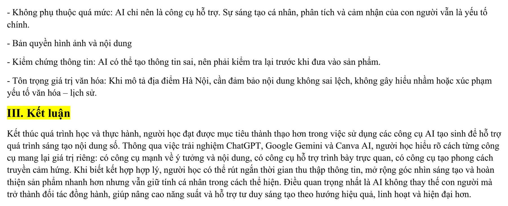

Năng lực cần hình thành
Bài tập giúp mình thực hành phối hợp nhiều công cụ AI tạo sinh trong một quy trình sáng tạo nội dung hoàn chỉnh, từ lên ý tưởng, viết mô tả, thử nghiệm hình ảnh đến thiết kế và tinh chỉnh infographic.
Mục tiêu cụ thể
- Xác định được chủ đề, đối tượng người xem và thông điệp chính của một sản phẩm nội dung số.
- Sử dụng ChatGPT để gợi ý địa điểm, xây dựng nội dung nền và tổ chức thông tin theo cấu trúc rõ ràng.
- Sử dụng Google Gemini để thử nghiệm phong cách diễn đạt truyền cảm hứng và tạo hình ảnh minh họa.
- Sử dụng Canva AI để đề xuất bố cục, màu sắc và xây dựng khung thiết kế infographic.
- Biết lựa chọn, rút gọn, kết hợp và chỉnh sửa đầu ra từ nhiều công cụ thay vì sử dụng nguyên bản.
- Nhận thức được yêu cầu kiểm chứng thông tin, tôn trọng bản quyền, minh bạch về vai trò của AI và giữ dấu ấn cá nhân trong sản phẩm.
Các bước thực hiện
Dự án được triển khai theo một quy trình kết hợp giữa AI và chỉnh sửa thủ công: xác định chủ đề, xây dựng nội dung nền, phát triển phong cách, thử nghiệm hình ảnh, thiết kế infographic và hoàn thiện sản phẩm.
Xác định chủ đề và định hướng sản phẩm
Chủ đề được lựa chọn là “Giới thiệu những điểm nên khám phá tại Hà Nội”. Sản phẩm hướng đến người trẻ và khách du lịch, vì vậy nội dung cần ngắn gọn, dễ đọc, có tính gợi mở và mang màu sắc trải nghiệm.
Infographic được định hướng theo phong cách đơn giản, màu vàng ấm và kết hợp giữa thông tin, hình ảnh cùng gợi ý hoạt động tại từng địa điểm.
Xây dựng nội dung nền bằng ChatGPT
ChatGPT được yêu cầu đề xuất tám địa điểm nổi bật tại Hà Nội, mỗi địa điểm có mô tả ngắn và một hoạt động gợi ý. Kết quả tạo ra danh sách có cấu trúc rõ ràng, phù hợp để làm nền tảng thông tin ban đầu.
Nội dung sau đó được kiểm tra, rút gọn và lựa chọn những chi tiết phù hợp với diện tích của infographic.
Phát triển giọng văn bằng Google Gemini
Google Gemini được sử dụng để viết lại phần mô tả theo phong cách truyền cảm hứng, trẻ trung và hiện đại. Các câu trả lời có tính kể chuyện và tạo cảm xúc tốt hơn, nhưng thường dài nên cần biên tập lại trước khi đưa vào thiết kế.
Mình giữ lại những cách diễn đạt sinh động, đồng thời cắt bỏ các từ ngữ dài dòng hoặc quá khẩu ngữ để bảo đảm sản phẩm vẫn rõ ràng và phù hợp bối cảnh học thuật.
Thử nghiệm hình ảnh minh họa bằng Gemini
Gemini được dùng để tạo các hình ảnh mang phong cách đồ họa cho một số địa điểm tại Hà Nội. Bước này giúp hình dung hướng thể hiện thị giác và thử nghiệm sự nhất quán giữa các hình minh họa.
Tuy nhiên, hình ảnh AI có thể sai chi tiết kiến trúc, địa danh hoặc bối cảnh văn hóa, vì vậy chỉ được sử dụng như bản phác thảo và cần kiểm tra trước khi đưa vào sản phẩm.
Tạo bố cục bằng Canva AI
Nội dung và hình ảnh đã chọn được đưa vào Canva AI với yêu cầu tạo infographic màu vàng ấm, bố cục đơn giản và dễ theo dõi.
Canva AI giúp tạo nhanh nhiều phương án bố cục, nhưng bản tự động chưa tối ưu hoàn toàn về khoảng cách, kích thước chữ, số lượng thông tin và sự cân bằng hình – chữ.
Tích hợp và tinh chỉnh thủ công
Mình kết hợp độ rõ ràng từ ChatGPT với phong cách diễn đạt truyền cảm hứng của Gemini, sau đó điều chỉnh lại câu chữ, căn lề, phông chữ, biểu tượng, màu sắc và thứ tự thông tin trong Canva.
Trước khi hoàn thiện, sản phẩm được kiểm tra về chính tả, tính chính xác, độ thống nhất và khả năng đọc trên cả máy tính lẫn thiết bị di động.
Quá trình sáng tạo nội dung số
Sản phẩm dưới đây thể hiện quá trình sử dụng các công cụ số và AI: ChatGPT, Google Gemini và Canva AI, sau đó biên tập và đánh giá kết quả.
Nhấn vào từng ảnh để xem kích thước lớn.
Sản phẩm infographic hoàn thiện

Quá trình thực hiện trên máy tính








Đối chiếu với yêu cầu bài tập
- Có một sản phẩm sáng tạo nội dung số với chủ đề và đối tượng cụ thể.
- Có sự phối hợp của ít nhất ba nhóm công cụ AI: tạo văn bản, tạo hình ảnh và hỗ trợ thiết kế.
- Có Prompt, kết quả và minh chứng cho từng giai đoạn sử dụng công cụ.
- Có bước biên tập, rút gọn và tích hợp đầu ra thay vì sử dụng nguyên bản nội dung do AI tạo.
- Có bảng so sánh điểm mạnh và hạn chế của từng công cụ.
- Có phân tích trách nhiệm của người dùng, tính minh bạch, bản quyền và yêu cầu kiểm chứng thông tin.
Những gì đạt được
Bài tập giúp mình hoàn thành một quy trình sáng tạo có sự phối hợp giữa nhiều công cụ AI, đồng thời nhận diện rõ công cụ nào phù hợp với từng nhiệm vụ.
- Xây dựng được nội dung giới thiệu tám địa điểm khám phá tại Hà Nội.
- Kết hợp được nội dung rõ ràng của ChatGPT với phong cách truyền cảm hứng từ Gemini.
- Thử nghiệm được hình ảnh AI để định hướng phong cách thị giác.
- Tạo được các phương án bố cục infographic bằng Canva AI.
- Biết rút gọn nội dung để cân bằng giữa chữ, hình ảnh và khoảng trắng trong thiết kế.
- Hiểu rằng chất lượng cuối cùng phụ thuộc vào kiểm chứng, lựa chọn và chỉnh sửa của người thực hiện.
Vai trò của từng công cụ
| Công cụ | Vai trò chính | Điểm cần kiểm soát |
|---|---|---|
| ChatGPT | Đề xuất ý tưởng, tổng hợp thông tin và tạo nội dung nền có cấu trúc. | Cần tăng tính cảm xúc và kiểm tra độ chính xác của thông tin. |
| Google Gemini - văn bản | Tạo giọng văn trẻ trung, truyền cảm hứng và giàu tính kể chuyện. | Cần rút gọn nội dung, giảm từ ngữ dài dòng hoặc quá khẩu ngữ. |
| Google Gemini - hình ảnh | Phác thảo nhanh ý tưởng thị giác và thử nghiệm phong cách minh họa. | Cần kiểm tra chi tiết địa danh, kiến trúc, bối cảnh và tính xác thực. |
| Canva AI | Đề xuất bố cục, màu sắc và khung trình bày cho infographic. | Cần tinh chỉnh thủ công về căn lề, phông chữ, mật độ nội dung và khoảng cách. |
Bài học và hướng nâng cấp
AI thay đổi quy trình sáng tạo như thế nào?
Trước đây, phần lớn thời gian được dành cho việc tự tìm ý tưởng, viết nội dung từ đầu và thử nhiều cách sắp xếp. Với AI, quy trình được rút gọn thành: ý tưởng → AI tạo bản nháp → người dùng biên tập → AI hỗ trợ thiết kế → tinh chỉnh thủ công.
Sự thay đổi này giúp tăng tốc độ và mở rộng số lượng phương án, nhưng không làm giảm vai trò của người sáng tạo. Người dùng vẫn phải xác định thông điệp, lựa chọn nội dung, kiểm chứng thông tin và chịu trách nhiệm đối với sản phẩm cuối.
Những vấn đề cần lưu ý
- Cần minh bạch về phần nội dung hoặc hình ảnh có sự hỗ trợ của AI.
- Không nên phụ thuộc hoàn toàn vào đầu ra tự động hoặc coi kết quả đầu tiên là sản phẩm hoàn thiện.
- Phải kiểm tra bản quyền của hình ảnh, phông chữ, biểu tượng và nội dung được sử dụng.
- Thông tin về lịch sử, văn hóa và địa điểm phải được đối chiếu với nguồn đáng tin cậy.
- Hình ảnh AI cần được kiểm tra để tránh sai kiến trúc, sai biểu tượng hoặc tạo ra chi tiết không có thật.
- Nội dung về Hà Nội cần tôn trọng yếu tố văn hóa, lịch sử và tránh cách diễn đạt gây hiểu nhầm.
Hướng cải thiện trong những lần tiếp theo
Mình sẽ xác định trước hệ thống màu sắc, kiểu chữ, tỷ lệ hình ảnh và giới hạn số từ cho từng mục trước khi yêu cầu AI tạo nội dung. Điều này giúp giảm thời gian cắt bỏ nội dung và làm cho các đầu ra nhất quán hơn.
Với các hình ảnh minh họa, mình sẽ ưu tiên nguồn ảnh có giấy phép rõ ràng hoặc tự chụp, chỉ sử dụng ảnh AI ở vai trò phác thảo. Trước khi xuất sản phẩm, mình sẽ kiểm tra trên nhiều kích thước màn hình, rà soát chính tả và nhờ người khác đọc thử để đánh giá khả năng tiếp nhận.
Sản phẩm đầy đủ
Báo cáo PDF trình bày toàn bộ quá trình lựa chọn công cụ, sử dụng Prompt, tích hợp đầu ra, so sánh hiệu quả và phân tích vai trò của AI trong sáng tạo nội dung số. Nếu trình duyệt không hiển thị khung xem trước, hãy dùng nút mở PDF.